![The submitted Somvique Lux product page at 1440 by 900. Left column: a photographic product frame of the mattress in a bedroom, with a four-part media tab strip reading See it, Size it, Feel it, Understand it. Right column: the product name and hybrid twelve-inch eight-layer construction label, a scoped review entry point, the firmness proposition, a nine-configuration size track, a single price ledger, financing and gift lines, a delivery estimate, and one Add to Cart with a trial, return and warranty strip below it.](assets/web/01-see-it-default-twin.jpg)
The company wrote its own answer first, and said matching it would not advance.
The assessment came with an unusual constraint. The company had already generated a baseline answer with an AI model, published it as an appendix, and told candidates that a submission matching or substantially replicating it would be treated as a no-decision. The baseline was the floor, not the target.
That changes what is being assessed. The question is not whether I can redesign a product page. It is what I originate on top of what a model already produces from the same brief.
The baseline had a real strategic thesis, and parts of it survived into my thinking: luxury and transactional clarity are not opposites, and every element should justify its visual weight.
It also shipped a labelled placeholder where the product was supposed to be: no actual product image, zero <img> elements. An award attributed to a body I could not verify. An accessibility log whose published ratios recompute, from its own stylesheet, as failures. Four further claim failures are in the detailed layer.
I treated it as useful structure, not as evidence.
See the full baseline audit Deep layer in progress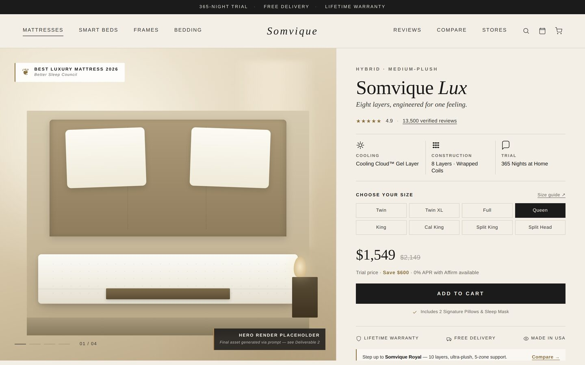
<img> elements, zero scripts, and a labelled placeholder where the product should be.The brief called it a positioning problem. The measurement said it was sequencing.
I opened the live page at the target viewport and measured where things were. The payable price lands 97px below the fold, the primary action 170px below it. The sticky purchase bar meant to rescue that is also below the fold on load, so nothing purchasable is visible before a shopper scrolls. Roughly 280px above the size selector goes to a monetised model switch.
Then I checked whether this was one brand's mistake. It was not. Only 4 of the 14 measured category pages completed the in-column purchase path inside a 900px fold. That is the measured set; I have not tested prevalence beyond it.
The finding underneath the numbers is that fold completeness is the wrong question. What occupies the space is the right one.
See the decision sequence and the seven root problems Deep layer in progress![Fold-position chart. Three vertical document tracks side by side, each plotting content blocks at their measured Y position against a common 900 pixel fold line drawn in red. The AI baseline track ends at 900 pixels. The submission track ends at 902 pixels with the price at 562, financing at 619, delivery at 693 and Add to Cart at 800, all above the fold. The production page track continues to about 4,000 pixels with the price at 932 and Add to Cart at 1,070, both below the fold, and a monetised upgrade block at 383.](assets/web/V-03-fold-position.jpg)
So my position was this. Recognition proof and product proof answer different questions. Awards and a volume claim tell a shopper the company is known, not what they are paying for. The product had enough substance to make its own case: a 12 inch hybrid, eight verified layers, a TENCEL cover. The redesign moves recognition out of the fold and lets the product carry the premium argument.
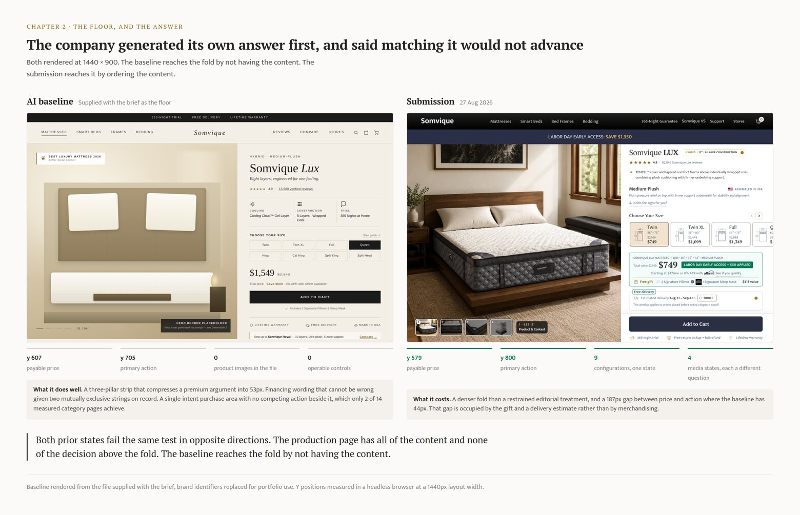
Five architectures, three measured, and none of them fitted.
I did not pick a layout. I built the candidates and measured them.
Five materially different ways of orchestrating the same decision were explored. Two were eliminated for stated reasons rather than taste: a modular grid with no required reading order, and an expand-on-intent concept whose value depends on an interaction a static deliverable cannot show. The reasoning and the per-concept measurements are in the detailed layer.
See the per-concept measurements Deep layer in progress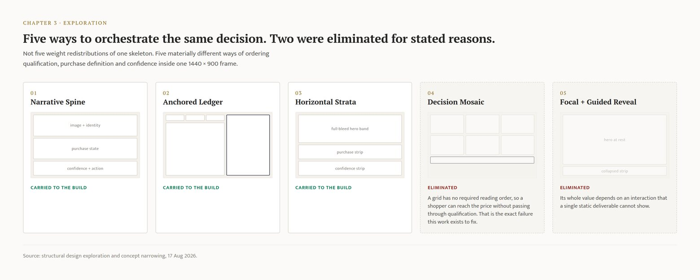
The three finalists were built as working HTML with identical copy, type scale and control heights, then rendered at true size and measured in two commercial states. Not one fitted, in either state. That was the most useful result, because it moved the problem from opinion to budget.
What closed the gap was not tightening the layout. Re-weighting content to its correct tier recovered 76 to 150px per concept. A proportionate spacing pass recovered 18 to 54px. The largest single source of overflow was a permanently expanded eight-option size grid that only needed to be reachable.
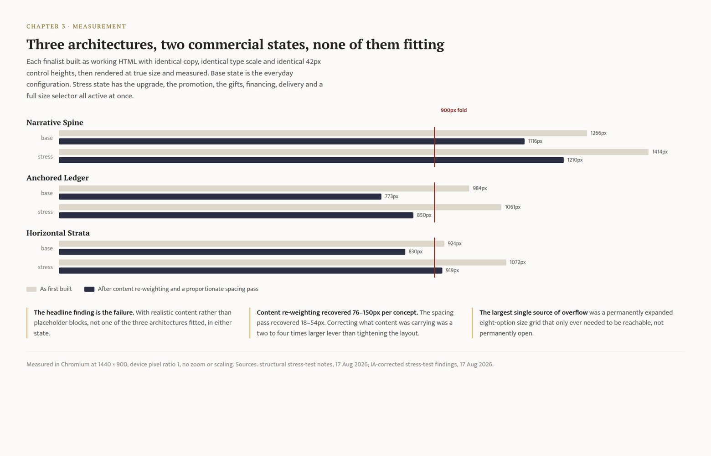
Then the part that is not linear. The measured selection was a three-band horizontal composition. The next morning a separate paper exploration produced the two-column direction that became the submission. I am not going to pretend one was refined into the other.
What the lab produced, and what it did not Deep layer in progress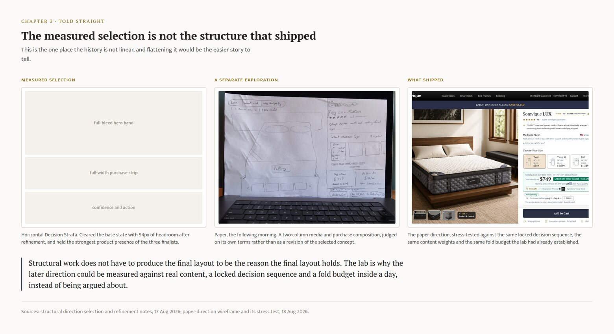
Product evidence on the left. One resolved purchase on the right.
The left column is not a gallery. It is four states, each resolving a different question a shopper has, in the order they tend to ask them. See it. Size it. Feel it. Understand it.
Size it carries a 12 inch depth rule measured against the rendered frame's own pixels and a to-scale footprint bound to the selected configuration. Understand it turns eight layers from a claim into something inspectable, each separated into what it is, what it does and why it matters, with an explicit note on its face that the render is schematic and its band proportions are not a statement of thickness.
The right column resolves the purchase. Identity, a scoped review entry point, the mechanism, feel translated into a consequence, configuration, one ledger, delivery, then a single commitment with three distinct ways back from it.
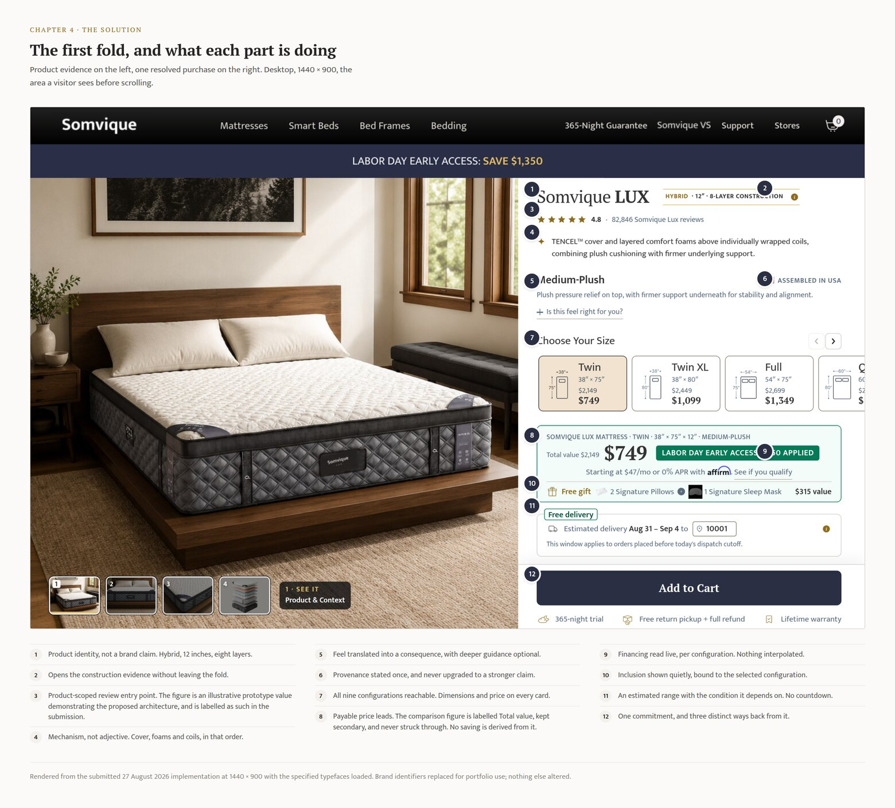
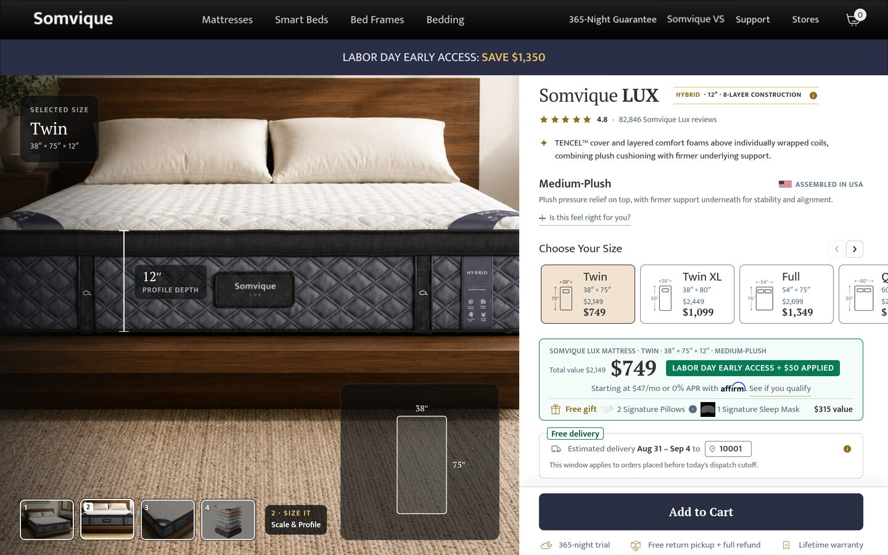
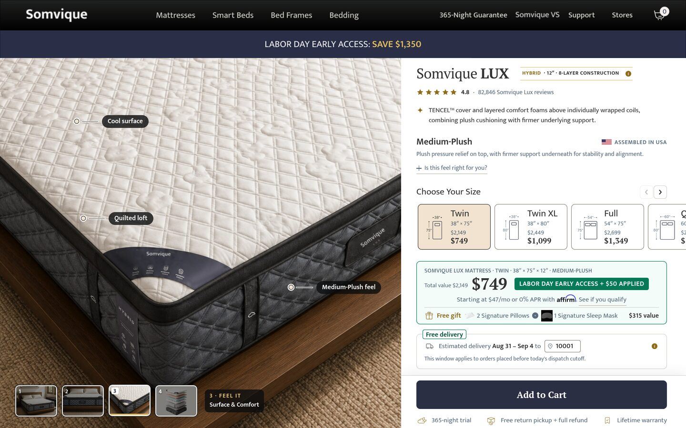
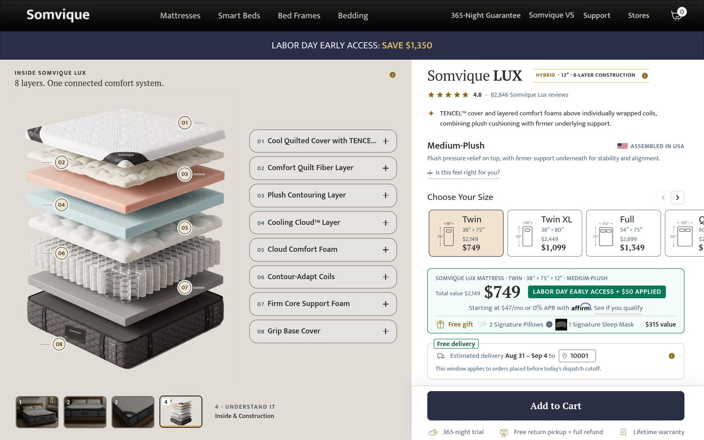
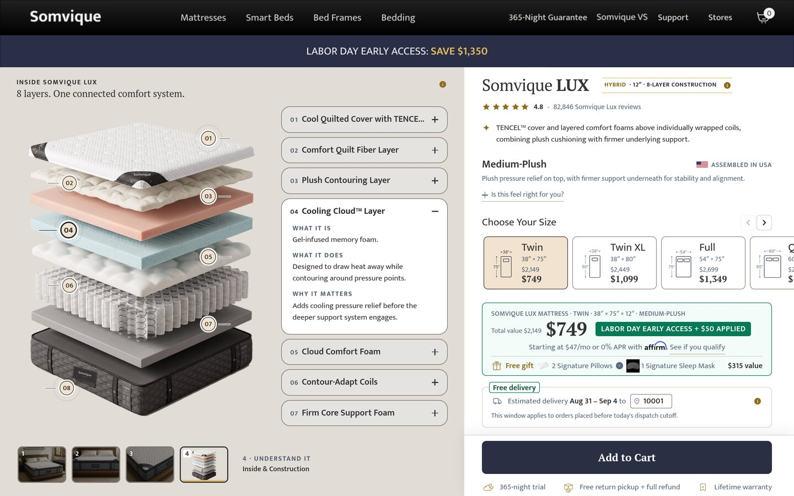
The submitted artifact is interactive.
Nine configurations, four media states, an eight-layer accordion, an editable delivery ZIP and a working cart outcome. This is an anonymised derivative of the 27 August submission with its behaviour, logic and geometry unchanged. It is a fixed 1440px application and is never scaled.
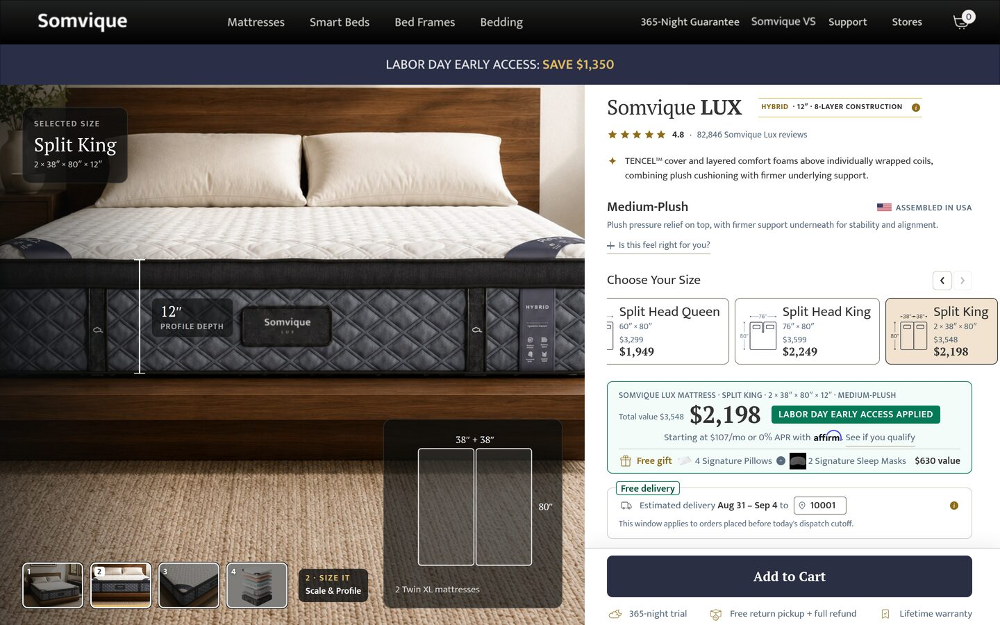
Seven further implemented statesV-18 · breadth of implemented state
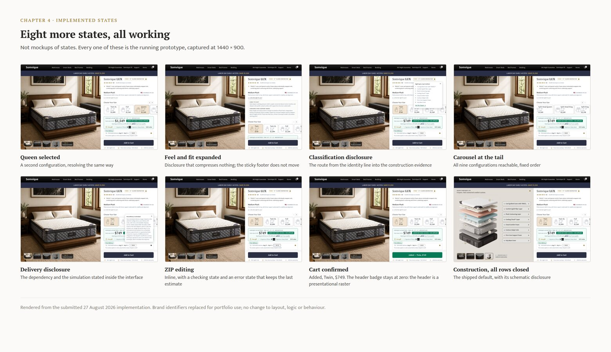
See all thirteen implemented states Deep layer in progress
One purchase, one truth.
Every dependent purchase surface moves together from one selected configuration. Selecting a size is the only thing that changes what is being bought, and when it changes the SKU line, the payable price, the comparison figure, the promotion string, the financing copy, the gift tier, the scale diagram and the delivery estimate all render from that record. The fan-out diagram names the full set.
Nothing is derived or interpolated. Each configuration carries its own values, read from the source rather than calculated from a neighbour, including the two that publish no financing figure. Focus is kept separate from selection, so arrow keys move focus and change nothing about the purchase.
The clearest proof is one frame. Selecting Split King changes the footprint diagram to two slabs, the dimension line to two by 38 inches, the price, the comparison figure, the promotion string, the financing figure and the gift tier, because that configuration ships as two mattresses.
See how the state model is built Deep layer in progress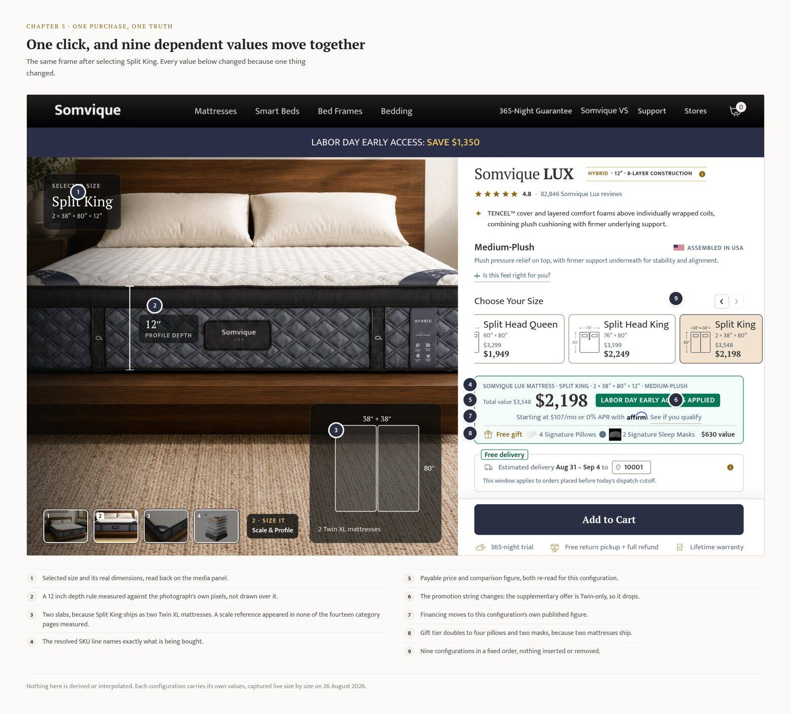
The full dependent set, as architectureV-10 · state fan-out
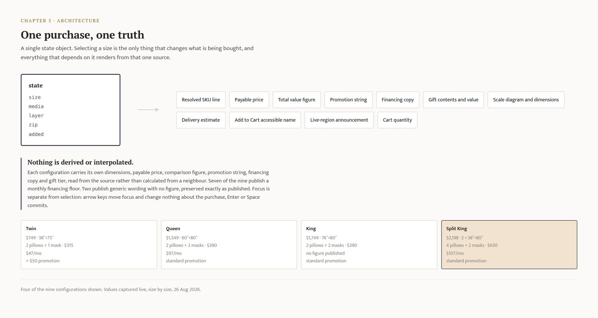
Four decisions where the evidence beat the more persuasive option.
Each removed or softened a conventional persuasive device in exchange for stronger evidence integrity. I have kept the cost of each one attached to it, because a decision without a cost is a preference.
The award badge
The derived saving
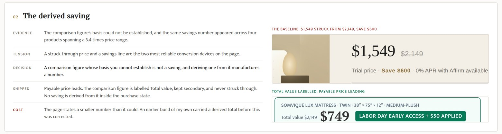
Countdown against dispatch condition
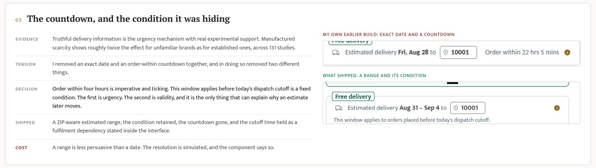
The upgrade that substitutes the product
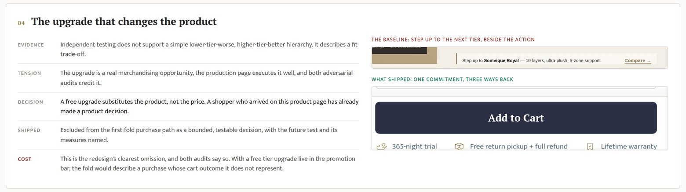
The one I would defend hardest is the third. I removed an exact delivery date and an order-within countdown together, and in doing so removed two different things. A countdown is imperative and ticking. A dispatch cutoff is a fixed condition. The first is urgency. The second is validity, and it is the only thing that can explain why an estimate later moves. The countdown stayed out. The condition came back.
See what each decision would take to settle Deep layer in progressMaking the imagery without letting the model invent the product.
The brief required the hero to show the actual product and said generic AI imagery of a luxury mattress would not meet it. That is a production constraint, not a prompting exercise.
The answer was to take product truth out of the model's reach. Authentic product cutouts from source imagery became the controlled input: seven cutouts across six angles, the prompt selecting whichever already carries the perspective closest to the requested camera view. The cutout constrained product identity and perspective while the environment was generated around that reference, then locked, so the second and third frames show the same room at the same moment. The finished media are AI-generated from authentic product cutouts, and that is how they are labelled.
Quality came from removing freedoms, not adding description. Six documented rounds, each closing a specific failure. Text-only generation produced a plausible mattress that was not this one. The prompts are mostly constraint, and the full sequence is in the detailed layer.
Three checkpoints run on every output, and the third is the one that matters: reject, do not repair product truth. When the same one keeps failing, stop regenerating and diagnose the input, the angle or the tool.
See the templates and the six rounds Deep layer in progress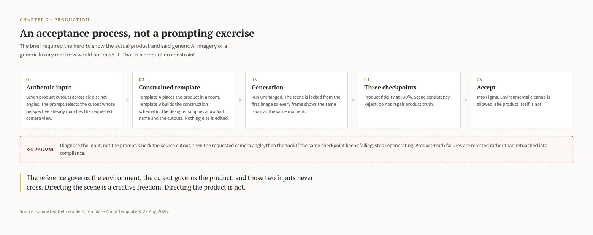
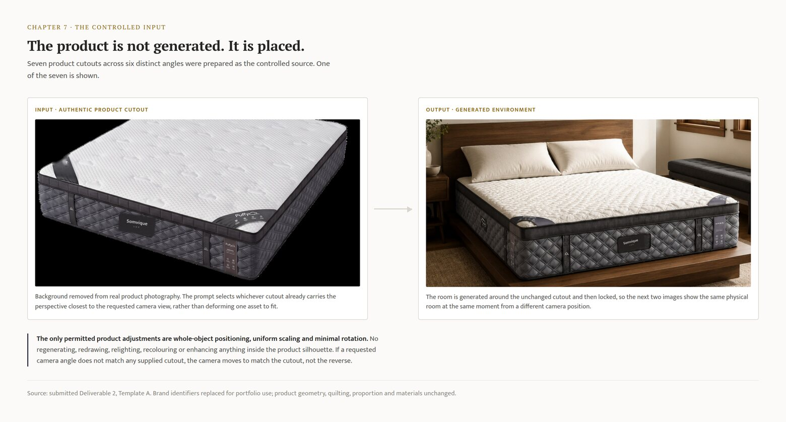
A design is only as good as what a second designer can do with it.
The handoff was written for a named profile: strong in Figma, works independently once aligned, new to AI tooling, extending the work to four more products and to mobile. It sets out what stays fixed, what changes per product, and a three-column boundary for what that designer decides alone, what they re-verify first, and what comes back to me.
The sequencing carries more of the thinking than the lists. Start with the closest product, because it tests the system cheaply. Not the simplest-looking one, because that is the one that removes a component.
See the full handoff Deep layer in progress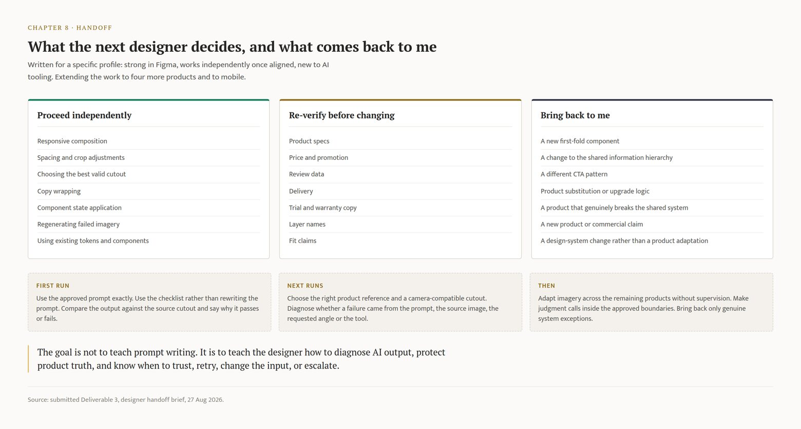
Underneath it is a three-layer token architecture, and it is less clean than my own system inventory claims: the submitted file carries 137 declared properties, 6 unreferenced and 19 raw hex values below the token block, and it is the authority. Three semantic roles exist for one reason only: a measured accessibility threshold failed, and they are documented in the stylesheet as such so nobody later simplifies them away.
Accessibility was measured on the rendered result rather than declared, because the baseline had declared it and been wrong. Four real defects in my own work were caught that way and fixed.
See the accessibility results and the token system Deep layer in progress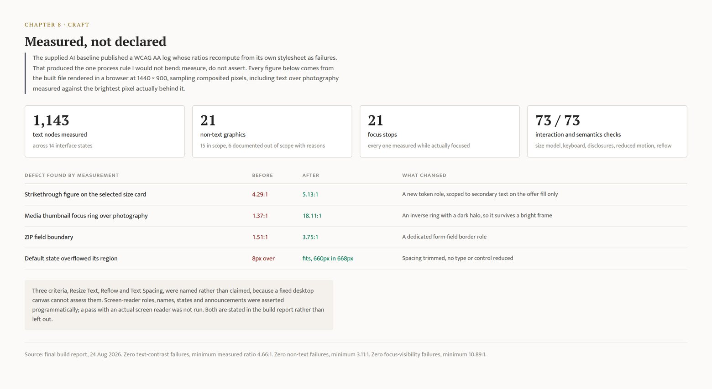
The token architecture, three layersV-16 · built from the submitted file
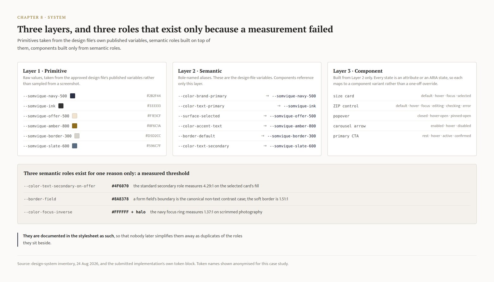
What I know, what is still a hypothesis, and what I would test next.
Four things were genuinely evaluated: structural fit, accessibility, a persona and extremes stress test that caught real arithmetic failures in my own artifact, and a blind adversarial audit against a frozen evidence package built to disprove the design.
I ran three model audits against it. Two valid runs independently ranked the redesign first. The third was excluded after its own output revealed it had simulated evidence access. All three ran against the 25 August build, not the 27 August submission, and the two differ in reviews, delivery and per-size financing. What they measured is the build they were given.
The redesign emerged as the strongest evidence-aligned hypothesis among the compared concepts. That is the only claim the method supports. It is not a test, not validation, and not a result.
The same audits named weaknesses I did not fix. No range comparison anywhere in the fold, while a free tier upgrade was live in the promotion bar. The one savings claim sits in a header raster with an empty alt attribute, invisible to assistive technology. The fit boundary sits behind a click, and the delivery resolution simulates a service that does not exist.
See the audit method and its limits Deep layer in progress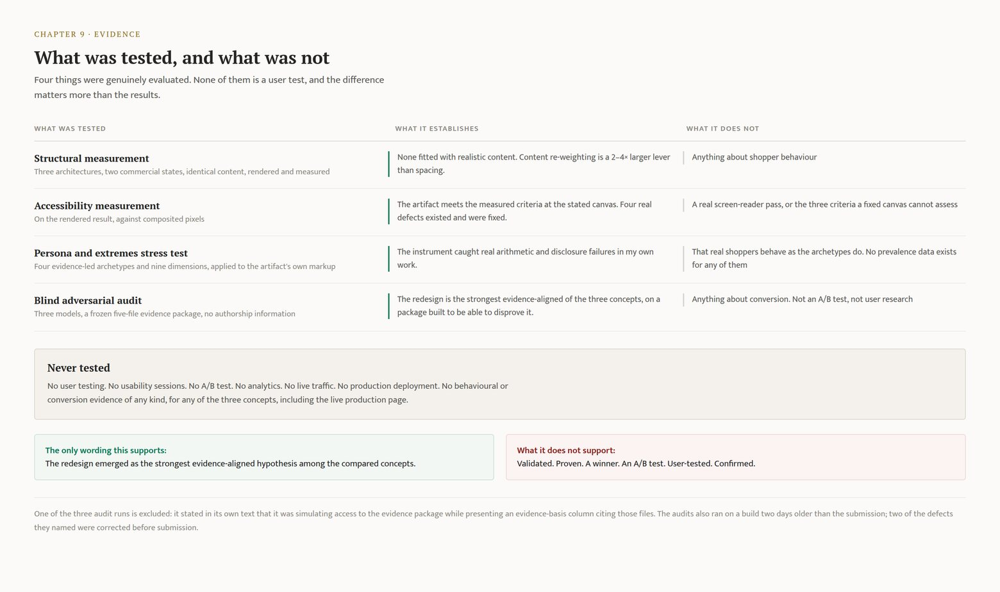
In the submitted 1440 × 900 first fold the payable price, the delivery block, the primary action and the recovery answers all sit inside the initial viewport, the last at y 872 in a 902px document. Three WCAG criteria were named rather than claimed because a fixed canvas cannot assess them. Every factual claim on the page is either sourced, or explicitly marked as illustrative or simulated where the real dependency did not exist.
That product-led premium raises perceived value without costing the reassurance the badges carried. That product-scoped, inspectable review evidence reduces hesitation more than a larger pooled number. That an honest range with its condition builds more confidence than a date or a countdown. That excluding the upgrade protects the decision rather than removing a comparison.
One worked example here. The other three, with their methods, are in the detailed layer.
Does the fit boundary help or repel? No competitor in the measured set engages the question, so there is no prior to borrow. I would test its presence and its strength. What settles it is 60 and 120 day return rate with trial-return reason codes, because a fit decision only shows up after someone has slept on the mattress. Size-switch count and time to first price resolution are diagnostics: they say whether the mechanism is being read, not whether it worked. Add-to-cart is contaminated on high-consideration products and is not evidence of success.